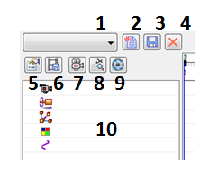
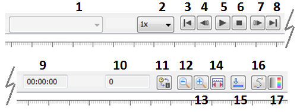
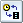
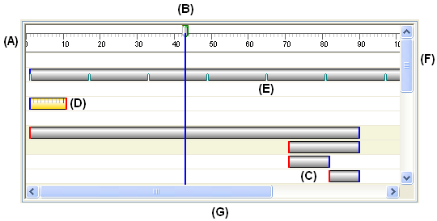

Animation Editor Tool
The Animation Editor tool (Tools→Environs→ERA→Animate→Animation Editor) has the following controls and options:

- Animation List (1)
-
Lists the existing animations. You can select an animation entry from the list for playback and editing purposes.
- New Animation (2)
-
Displays the Animation Properties dialog box so you can define the properties for a new animation.
- Save Animation (3)
-
Saves the current animation.
- Delete Animation (4)
-
Deletes the current animation.
- Animation Properties (5)
-
Displays the Animation Properties so you can edit the properties for an existing animation.
 Save as Movie (6)
Save as Movie (6)-
Displays the Save as Movie dialog box so you can save the current animation as an AVI file.
- Camera Path (7)
-
Displays the Camera Path Wizard so you define the camera path you want.
- Display Camera Path (8)
-
Displays the camera path as a curve in the graphic window. This can be useful in visualizing the path the camera will take during the animation.
- KeyShot Animate (9)
-
Used to animate the current model in KeyShot.
- Animation Events List (Left Pane) (10)
-
Lists the event types available in the current animation. Depending on the current animation, you can define events or select existing events for the camera, motor, explosion, appearance, and path you want to use for the current animation. You can expand, collapse, and select items in the list. Shortcut menu commands are available that allow you to define the event you want to use for the animation, delete the current event, and so forth.

- Update (1)
-
Specifies how the animation updates:
-
Relationship—Used with Linear and Rotational motors. Only Active Level assembly relationships solve. This option is not available for Variable Table Motors. If no motors are in the timeline, as if only an Explode option is being animated, this is the default setting. If the Detect Collisions or Physical motion options are selected in the Motor Group Properties dialog when the motors used for an animation are being defined, this is the default option. If only Linear or Rotational motors are in the timeline only this option is available.
-
Active Assembly—Used with Variable Table motors. When selected, relationships, variables and formulas in the active assembly will update. This includes updates to measurement variables, patterns, adjustable parts/assemblies, frames, pipes, wires, sketches, assembly features, and weldments in the active assembly. This option will freeze Inter-Part links during the animation. They will not update.
In this mode Linear and Rotary motors will update from the current position to the next position. They will process in an incremental way. Direction vectors and axis are defined/updated using the components current position. This occurs even if there is not a Variable Table motor in the timeline.
-
Active Level—Used with Variable Table motors. When selected, the active level is animated. That means that relationships and variables from the active assembly down will update. This is like running the Update Active Level command after each frame. This includes updates to patterns, adjustable parts, frames, pipes, wires, sketches, and assembly features in the active assembly. Inter-Part links will update
Note:When Rotational or Linear motors are mixed with Variable Table motors, only the Active Assembly and Active Update options are available.
-
- Speed (2)
-
Specifies the speed you want to use for playback purposes. The speed setting does not affect the speed of an AVI recording, or the relative speed of the animation entries.
- Go to Start (3)
-
Moves the current frame indicator to the start of the animation.
- Previous Frame (4)
-
Moves the indicator to the previous frame.
- Play/Pause (5)
-
Plays or pauses the current animation.
- Stop (6)
-
Stops the playback of the animation.
- Next Frame (7)
-
Moves the indicator to the next frame.
- Go To End (8)
-
Moves the current frame indicator to the end of the animation.
- Time (9)
-
Displays the current time in the animation.
- Frame (10)
-
Displays the current frame in the animation.

Toggle Scale (11)-
Toggles the timeline scale between frames and seconds.
- Zoom Out (12)
-
Reduces the scale of the animation timeline.
- Zoom In (13)
-
Increases the scale of the animation timeline.
- Fit (14)
-
Scales the timeline horizontally so that all items are displayed.
- Minimize (15)
-
Minimizes the Animation Editor.
 Motion Path (16)
Motion Path (16)-
Displays the Motion Path command bar so you can select components and draw a curve path to guide component movement.
 Appearance (17)
Appearance (17)-
Displays the Appearance command bar so you can create an appearance event. For example, you may want a part to fade in or fade out in your animation.
- Event Timeline and Duration List (Right Pane)
-
Displays Event Duration Bars, which represent the start and stop times, and elapsed time for each event in the current animation timeline. You can edit event duration bars by dragging with the cursor or using shortcut menu commands. This allows you to customize the animation.

Basic user-interface elements in the right pane include:
-
(A) Frame Scale. You can use the Toggle Scale button to change the scale display between Frames and Seconds.
-
(B) Current Frame Indicator. The current frame is the frame which is displayed in the graphic window. You can use the cursor to drag the Current Frame Indicator to another location to view individual frames in the animation.
-
(C) Event Duration Bars. Notice that a different color is used at the start and end locations.
-
(D) Selected Event Duration Bar. Notice that a scale is displayed when a duration bar is selected. This can make it easier to precisely relocate a duration bar with respect to Frame Scale.
-
(E) Event Duration Bar Key Frame Indicator.
-
(F) Vertical Scroll Bar. Allows you to scroll the timeline up and down.
-
(G) Horizontal Scroll Bar. Allows you to scroll the timeline left and right.
Shortcut Menu Commands
The following shortcut menu commands are available. The shortcut menu commands are context-sensitive. In other words, the commands which are available change based on what is selected.
- Left Pane Shortcut Menu Commands
-
- Delete
-
Deletes the selected event.
- Rename
-
Renames the selected event.
- Edit Definition
-
Allows you to define a new event or edit an existing event. The action you can perform depends on the event type and whether you are defining a new event or editing an existing event.
- Camera
-
The Edit Definition command displays the Camera Path Wizard when you click the Camera category entry, and displays the Path command bar when you select an existing camera event.
- Motor
-
The Edit Definition command displays the Motor Group Properties dialog box when you select the Motor category entry.
- Explosion
-
The Edit Definition command displays the Explosion Properties dialog box when you select the Explosion category entry.
- Appearance
-
The Edit Definition command displays the Appearance command bar when you select an existing Appearance event.
- Paths
-
The Edit Definition command displays the Path command bar when you select an existing Path event.
- Expand All
-
Expands all the event collections.
- Right Pane Shortcut Menu Commands
-
- Cut
-
Cuts the selected event from the animation and places it on the Clipboard.
- Copy
-
Copies the selected event from the animation and places it on the Clipboard.
- Paste
-
Pastes an event onto the animation timeline.
- Delete Duration
-
Deletes the selected event duration.
- Insert Key Frame
-
Inserts a keyframe at the current cursor position. This option is available when the cursor is over a camera or motion path event duration bar.
- Delete Key Frame
-
Deletes a keyframe at the current cursor position. This option is available when the cursor is over a camera or motion path event duration bar.
- Insert Camera Location
-
Inserts a camera location at the current cursor position. This option is available when the cursor is over a camera event duration bar.
- Add Frames
-
Displays the Add Frames dialog box so you can add frames or time to an animation event.
- Remove Frames
-
Displays the Remove Frames dialog box so you can remove frames or time to an animation event.
- Properties
-
Displays the Duration Properties dialog box so you can redefine the start time, end time, or elapsed time for an animation event.
How do I
Create an animation using the Animation EditorDefine a Camera Path for an Assembly Animation
Create a motor
Simulate a Motor
Modify flow lines in an exploded assembly
Modify an animation
Delete an Animation
Add frames or time to an animation event
Remove frames or time from an animation event
Play back an animation
Save a movie
Display flow lines in an exploded assembly
Display flow line terminators in an exploded assembly
Use a Surface Dial with the Animation Editor
Learn more
Creating assembly animationsLook up more details
Camera Path WizardCamera Path Wizard (Page 1)
Camera Path Wizard (Page 2)
Camera Path Wizard (Page 3)
Rotational Motor and Linear Motor commands
Animation Editor command
Camera Path Wizard command
Simulate Motor command
Delete Animation command
Add Frames Command
Remove Frames Command
Save As Movie command
Add Frames Dialog Box
Animation Properties dialog box
Appearance command bar
Delete Animation Dialog Box
Duration Properties dialog box
Rotational Motor command bar
Linear Motor command bar
Motor Group Properties dialog box
Path command bar (Animation Editor Tool)
Remove Frames Dialog Box
Save As Movie dialog box
Save As Movie Options dialog box
Related Topics
Variable Table Motor commandVariable Table Motor workflow